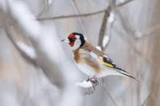

DUDEK
Gatunek średniej wielkości ptaka wędrownego z rodziny dudków. Wyróżnia się gliniastopomarańczowym ubarwieniem z czarno-biało pręgowanym grzbietem i skrzydłami oraz czarnym ogonem z białą przepaską.
KUKUŁKA
gatunek średniego ptaka wędrownego z podrodziny kukułek w rodzinie kukułkowatych. Jedyny w Europie Środkowej pasożyt lęgowy.

SŁOWIK SZARY
gatunek małego ptaka śpiewającego z rodziny muchołówkowatych. Ptaki z tej grupy są najznakomitszymi śpiewakami. Śpiew ich jest donośny, niezwykle urozmaicony, o dużej skali tonów. Słowik przylatuje na tereny Polski w kwietniu-maju, a odlatuje do Afryki w sierpniu-wrześniu.
SÓJKA
gatunek średniej wielkości ptaka z rodziny krukowatych, zamieszkujący Eurazję i północno-zachodnią Afrykę. Nie jest zagrożony.
SROKA
gatunek średniej wielkości ptaka z rodziny krukowatych, zamieszkujący Eurazję. Nie jest zagrożony.
SZCZYGIEŁ
gatunek małego ptaka z rodziny łuszczakowatych. Zamieszkuje Europę od atlantyckich wysp i zachodniej Europy do środkowej Azji na wschodzie oraz większość Azji Mniejszej i Afryki Północnej.

WRÓBEL
gatunek małego ptaka osiadłego z rodziny wróbli, zamieszkującego Europę, Azję i północną Afrykę. Pierwotnie ptak półpustyń i stepów, pochodzi prawdopodobnie z Półwyspu Arabskiego i Azji Mniejszej.
ZIĘBA
gatunek małego ptaka z rodziny łuszczakowatych. Ogółem zasiedla Europę z wyjątkiem północnej Skandynawii i północnej Rosji, zachodnią i środkową Azję oraz północną Afrykę. Introdukowana na Nową Zelandię oraz na południe RPA. Nie jest zagrożona wyginięciem.